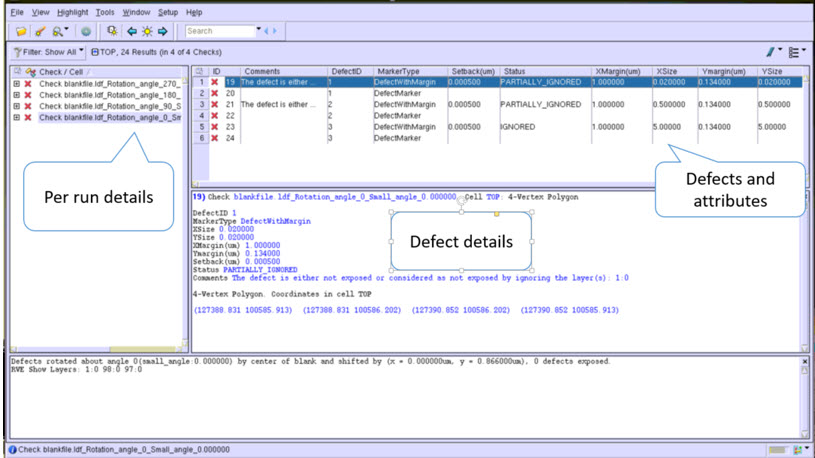
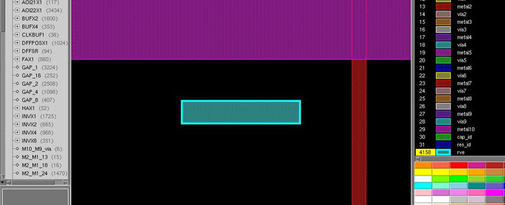

You can visualize
the result of Calibre MDPDefectAvoidance by plotting the transformed defects
coordinates using Calibre RVE.
Prerequisites
A
valid license for Calibre MDPview and Calibre RVE.
A layout
is loaded into Calibre MDPview.
Calibre
MDPDefectAvoidance has made a successful defect avoidance run, creating
a valid visualization results database (visualization.rdb).
See “Visualization RDB Database File”.
Procedure
- Launch
Calibre MDPview and open a design file. For more information, refer
to the Calibre MDPview User’s and Reference Manual.
- In Calibre MDPview, select Verification > Start RVE to
launch Calibre RVE. The Calibre RVE window appears.
- In the Calibre RVE dialog
box, provide a valid visualization results database file (located
inside a unique directory created inside the one specified by the report_directory
or ReportDirectory parameter) in the Database field and click Open. A Calibre RVE viewer
window appears.
Figure 2. Calibre RVE Viewer
The left
side pane contains details of each run. The right top pane displays
all the defects, which are rotated and shifted by a solution vector.
The right bottom pane displays the details of the defect.
There can be two types of markers, DefectMarker
and DefectWithMargin. DefectMarker represents only the defect window.
DefectWithMargin is a bounding box created by considering the defect,
user-supplied setback, and margin reported in the output result.txt file.
By default, DefectMarker followed by DefectWithMargin are available
in the visualization RDB file. If the only_defect_marker parameter
is set to true in the Calibre MDPDefectAvodiance parameter file,
only DefectMarker is available in the RDB file.
- Double-click on any defect
to plot the defect location on the design layout.
Figure 3. Plotting a Defect
in the Layout
Use the Calibre RVE interface
to navigate through all the defects using RVE and verify the results
generated by Calibre MDPDefectAvoidance.